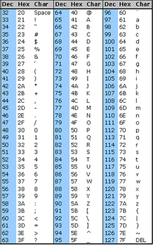
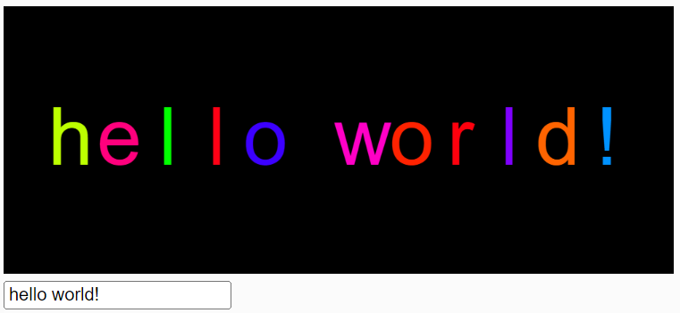
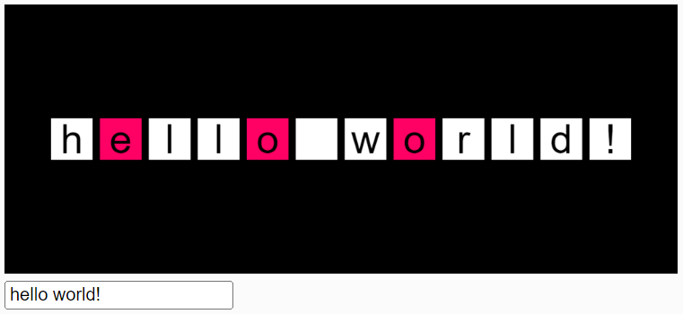

Previously you wrote the reverser() function, which took a four-character String and returned the reversed version of it. Most likely you wrote something similar to the following:
function reverser(input){
let a = input.charAt(0);
let b = input.charAt(1);
let c = input.charAt(2);
let d = input.charAt(3);
return d + c + b + a;
}
The charAt() function is called with each index. The four results are concatenated together backwards when returned.
Open Then New Reverser workspace in CodeHS.
There you will find a version of reverser that uses an accumulator variable, meaning a value that starts small and gets pieces added to it one at a time.
function reverser(input){
//Create an accumulator
let acc = "";
let d = input.charAt(3);
acc += d;
let c = input.charAt(2);
acc += c;
let b = input.charAt(1);
acc += b;
let a = input.charAt(0);
acc += a;
return acc;
}
The acc variable starts as an empty String, and adds the characters one by one, starting with the last index and working towards index 0.
Run the program to confirm that it works for a string with length 4.
When you write the accumulator version, you can see a little bit of a pattern building. The solution involves repeating the same two lines: call charAt() and add the result to the end of the accumulator String.
The indices make a number pattern from 3 down to 0. This can easily be replicated with a loop
function reverser(input){
//Create an accumulator
let acc = "";
//let i represent 3,2,1,0
for(let i = 3; i >= 0; i--){
//get the character at i
let c = input.charAt(i);
//add it to our string
acc += c;
}
return acc;
}
Copy the above solution into your workspace and run it to confirm that it works.
With a loop involved, we have the ability to make our function much more powerful. Right now it is still limited to only four character strings, but that is easily remedied.
The loop only starts i at index 3 because we know it to be the last index of a string of length 4. Remember that the last index of any string is one less than its length, which the .length attribute can give us.
Modify the for loop's header to start at input.length-1
for(let i = input.length-1; i >= 0; i--){
With that change our reverser() function now works for a string of any length. Confirms that it works by trying it with a string of tremendous length.
Open the Delete The A workspace
The original Delete The A assignment had you "removing" a single a from a string
"scripps ranch falcons" became "scripps rnch falcons"
This worked well enough, but our new goal is to
"scripps ranch falcons" became "scripps rnch flcons"
Like the previous deleteTheA(), removing the a is more about choosing everything but the a to add to a String. The function you've been provided has another loop where the variable represents each index of the input string, along with a charAt() function to fetch the character at each location.
for( let i = 0; i < input.length; i++){
let c = input.charAt(i);
This time the loop goes forwards through the string, starting at index 0 and going up to length-1. Looping this way is the most common way to perform most of the assignments in this assignment.
The provided code will let us access each character from the string one at a time. What we need to do is accumulate all of the non-a characters into a separate string. Using the previous workspace as inspiration:
We can modify the loop above to perform a little more analysis of the string variable by adding a counting variable.
Open the Example: C counter workspace in CodeHS where you will be met with the cCounter example
function cCounter(inputStr){
let count = 0;
//let i represent index 0,1,2,3...
for( let i = 0; i < input.length; i++){
//Get the character at i
let c = input.charAt(i);
if( c == "c"){
count++;
}
}
return count;
}
Like the string accumulators, a counting variable is initialized to be small and increases during the loop. This time we are counting, so the value is a number. The count variable starts at 0 and increases every time during our loop that we find an index with a "c" character.
Test the program out will a word like "Sacco" and it should return a 2.
The purpose of this function is to determine how many words are in the parameter string. The key to it is realizing that the number of words is very closely related to the number of spaces that exist in the string. If you can count the spaces, you can determine how many words there are.
"Hello Mister Sacco" has 2 spaces separating 3 words
"Scripps Ranch High School" has 3 spaces separating 4 words
"computer" has 0 spaces separating 1 word
Test your function multiple times to make sure that it works.
We usually associate greater-than or less-than symbols with numbers:
8 < 4 is false
9 > 3 is true
In JavaScript, you can use them to compare strings as well:
"A" < "B" is true
"E" > "R" is false
"G" < "F" is false
Though it may seem that strings are compared alphabetically. They actually use the order of characters in the ASCII table as a guide.

Whenever you see "A" < "B", you could substitute the ASCII values of "A" and "B" and get 65 < 66, which is true. This causes some strange situations. For example, notice that every single lowercase letter has a higher character value than the uppercase. This can cause confusion if you're comparing strings with different capitalization.
"Z" < "a" is true
If we have a character and want to see if it's a lowercase letter, we could ask if it was in the range from "a" to "z"
letter >= "a" && letter <= "z" //Only true when letter is a lowercase lestter.
Find the capCount() function in your workspace, whose purpose is to inspect the parameter string and return the number of capital letters it contains:
"Sacco" -> 1
"mR. sAcCo" -> 3
"Scripps Ranch High School" ->4
Test your code multiple times to make sure that it works properly.
Find the Vowel Counter workspace
This one is a little different because it has two functions that are meant to work together. First find the isAVowel function
//letter is a single character. Return true if it is a vowel, false if not.
function isAVowel(letter){
}
The purpose of this function is to look at the parameter, letter, and return true if it is a vowel and false if not. This is not meant to be a loop, assume that the letter parameter is a single character.
There are two different ways that you can do this:
- Use individual if statements to check for each vowel
- Assign the string "aeiou" to a variable and then use indexOf() to search for the parameter. If it's a vowel, a number 0 - 4 will be returned, and if not it will return a -1.
This should work for both uppercase and lowercase letters.
- Add more letters to your original strategy
- If your code only detects lowercase vowels, convert the parameter to lowercase as the first thing you do.
When run, you'll see that there are checkboxes allowing you to choose which function is being run. You can change it this way each time, or modify the testIsAVowel to change what its initialized to when the program starts
Test your function many times with vowels and non-vowels, capitals and lowercase letters.
Remember, when you have a method that returns a boolean (true or false), you can use it to run an if statement
let v = "a";
if( isAVowel( v ) ) //checks to see if v is a vowel
alert("VOWEL");
else
alert( "NO VOWEL");
Find the vowelCounter() function. Its purpose will be to return a count of how many vowels are in the parameter string.
"Sacco" -> 2
"Scripps Ranch High School" -> 5
"computer" -> 3
You should be able to modify your counting loop to use your new isAVowel() function to determine which letters are vowels.
Test your code multiple times to make sure that it functions properly.
Open the Cat Counter workspace
The catCounter() function's purpose is to count the number of times the word "cat" appears in the parameter.
"cats are okay" -> 1
"catacacatacatc" -> 3
"taccat" -> 1
This will be a little more different because the word that we're searching for is three characters long. Instead of using the charAt() function three times, you should instead take a substring() located at i
let sub = input.substring(i, i+3); //substring getting three characters at a time
If I is doing our usual loop, it will get three characters at a time. That way you can count the number of times that the substring is "cat".
Test your code multiple times to make sure that it functions properly, then paste your catCounter() function below.
Open the Drawing One by One workspace
When you run the sketch, you'll see that there is an input field as well as the canvas. The goal of this assignment will be to paint the text in the input field to the canvas, so the draw function starts with a line of code retrieving that input.
function draw() {
background(0);
fill(255);
let txt = inpt.value(); //Gets the value from the input box.
text(txt,250,100); //REPLACE THIS WITH A LOOP
}
inpt.value() will retrieve whatever value is in the text box and assign it to the txt variable. The text() function is used to draw the entire string in the center of the canvas, but this is not what we want to do.
Instead, we want to write a loop that will use text() to draw one character at a time. That way we will be able to draw them with randomized sizes and colors. Use an index based for-loop like the other ones in this workspace to help you access each character, then call the text() function with each character.
Write a loop that will get every character from the txt variable and call the text() function to draw it on the screen. The real challenge is deciding on what the x values of each letter should be in order to space them out properly. This is a problem that requires math to determine how much spacing should be between each letter. We could do that, or we could make map() do the work.
Each letter is at an index that we usually represent with the letter i in our loop: 0,1,2,3,4, etc. with the last index being the length-1
For this canvas, we want our x values to range from 50 to 450.
let x = map( i , 0, txt.length-1, 50, 450);
When done this way, it will calculate the x location that matches each index without you having to do much math.
As you loop through each letter, you should select a random color for the fill to be.

Since the draw() function repeats for every frame that we see, you will get a rapidly flickering version. Feel free to adjust the speed with a line like frameRate(10);
Change the message in the input to make sure that it works for messages of different sizes.

Open the Highlighted Vowels workspace
You will again be asked to draw the message to the canvas one letter at a time, but this time each letter should be surrounded by a shape of some sort (circle/square) and the vowels should be a different color than the others.
You should absolutely go copy your previous isAVowell() function, as it will be useful here.
Test your code out with different strings to make sure that it works..
It is important that you have a variety in the passwords that you choose. There are four rules that you generally should follow when choosing a password:
- At least one capital letter
- At least one lowercase letter
- At least one number
- At least eight characters long
There you will find a setup function that creates an input field and a paragraph html element. The input field is told to call the everyTimeAKeyIsPressed() function, which is where your code will go.
Your job is to analyze the password that is being input and determine if it is Weak, Medium, or Strong. This should be based on how many of the four 'password rules' are being followed.
- One or zero rules being followed is Weak
- Two or three rules being followed is Medium
- All four rules being followed is Strong
Again we are interacting with the HTML elements directly in the code by calling their functions. We use the value() function to get our input string
let pass = inpt.value();
And our results are shown by interacting with the output paragraph element
out.html("Weak");
out.style("color","red");
When you know how strong the password is, you should:
- Set the paragraph element's text to be "Weak", "Medium", or "Large". For the paragraph elements, you modify text using the html() function
out.html( "WEAK" );
- Set the color of the paragraph element to match the strength. Weak is red, Medium is yellow, and Strong is green. This can be done using the style() function:
out.style("color","red");
The length of the string is simple to determine, but the other three rules require looping. Create three counting variables to count the number of characters that are uppercase,lowercase, or numerical. Then loop through the string to perform the actual counting.
All three rules may be detected using a 'range of strings', for example: letter>= "a" && letter <= "z" would only be true for lowercase letters.
After you have accurate counts of the number of upper, lower, or numerical characters you should create another variable representing the number of rules that are being followed. Use four if statements to focus on each rule and increment the count for each one that's being followed. In the end, rule count should be a number from 0 - 4 that may be used to determine if the password is weak, medium, or strong.
Since the function is called with every keypress, you should see it update live. Test is multiple times to make sure that it is acting as intended.